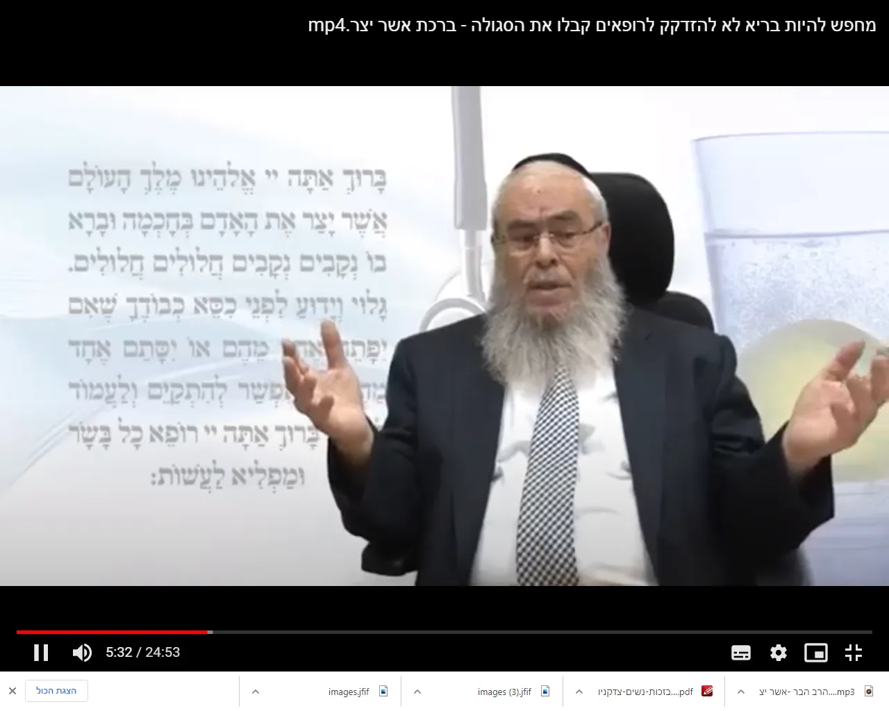
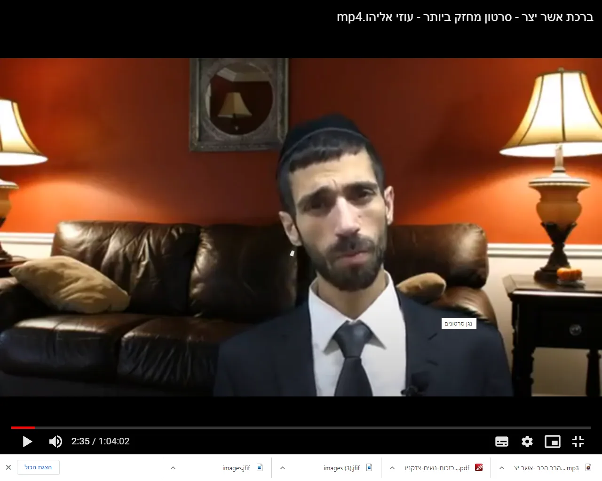
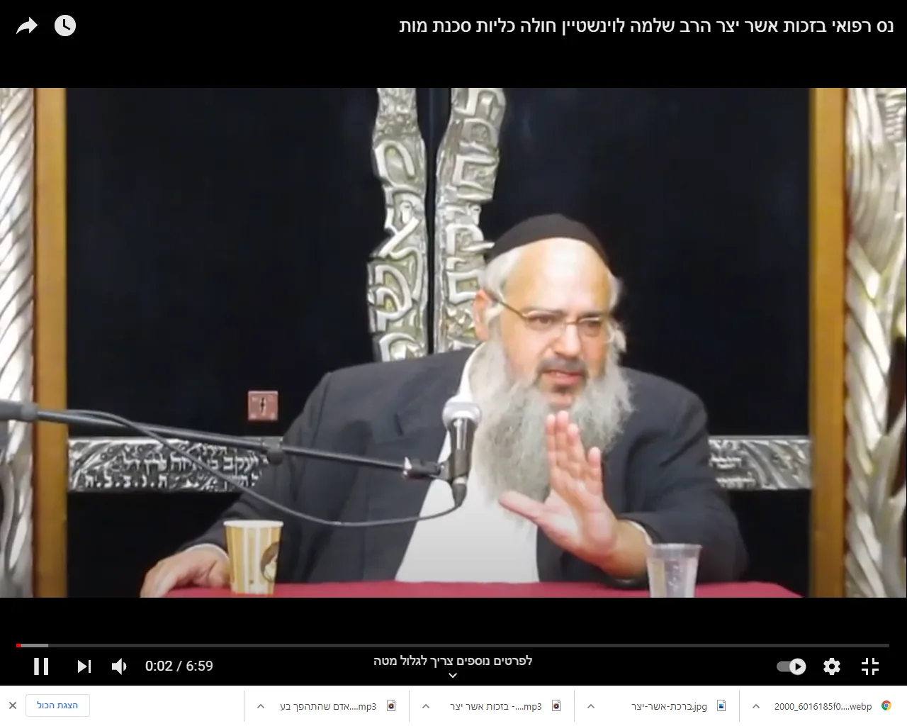

שיעורים לצפיה

ניתן לקרוא כאן בזכות אשר יצר - דר מנחם ברייער.pdf

לחת כאן לראות - ברכת אשר יצר - סרטון מחזק ביותר - עוזי אליהו
הרב אשר דרוק - חשיבות ברכת אשר יצר

נס רפואי בזכות אשר יצר הרב שלמה לוינשטיין חולה כליות סכנת מות.mp4